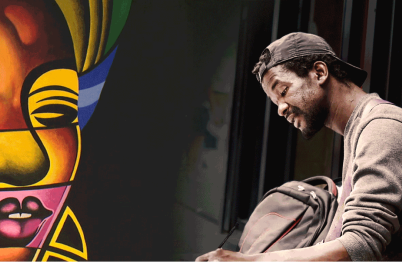
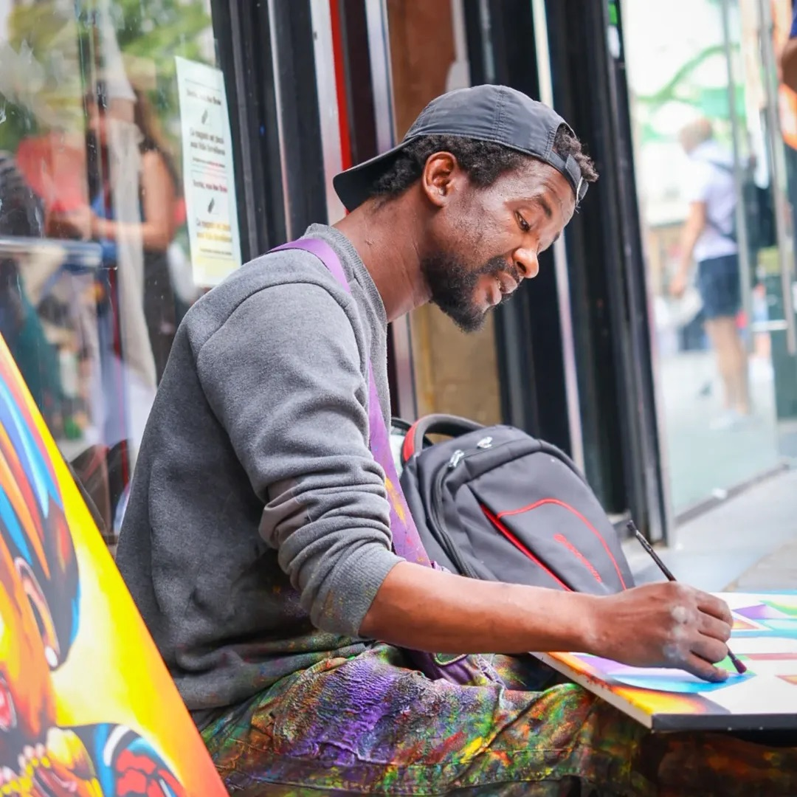

Peintre, actif dans
l'espace public
à Bruxelles
Œuvres vibrantes, colorées,
profondément humaines
Oeuvres Phares
{kind=link}
{kind=link}



À Propos
Originaire de Conakry en Guinée, Alpha Oumar Diallo — dit Le Lion Pacifique — mêle dans ses toiles l'influence de Picasso à celle de la culture africaine. Ses oeuvres, vibrantes de couleurs, racontent l'expérience migratoire, la dignité humaine et la quête de liberté.
Arrivé en Belgique en 2014, il peint dans l'espace public à Bruxelles, rue du Marché aux Poulets. Ses créations sont le reflet d'un combat pour la liberté, pour ceux qui vivent dans l'ombre. Six expositions depuis 2024, de l'Église du Béguinage au Centre Communautaire Maritime.
Chaque tableau est un acte de résistance. À travers des visages cubistes, des lions majestueux et des scènes de rue colorées, Alpha donne une voix à ceux qu'on ne voit pas. Sa peinture, accessible et directe, refuse le silence.
« J'ai fui vers la Belgique, pas pour l'argent, mais parce que dans mon pays j'ai critiqué le régime. »En savoir plus
Prochaine
Exposition
2026

Six expositions depuis 2024 — de l'Église du Béguinage au Centre Communautaire Maritime de Molenbeek. Alpha peint dans la rue, expose dans la ville.